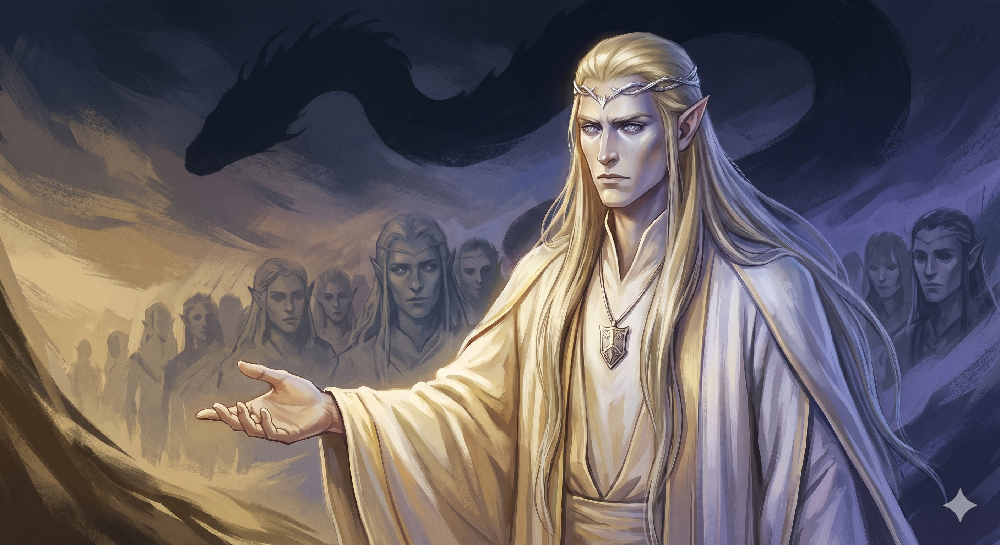

Appears in: Couch Potato Chaos
Profile

- Appears in: Couch Potato Chaos
- Aliases: The First King, King Lorien
- Role: First elven king; the leader who brought the elves from the undying lands to Etheria; the monarch who struck the Entropy Bargain
- Personality: Lorien is a figure defined by a single, world-shaping choice — and the wiki gives no direct window into his temperament, his doubts, or his motivations. What can be inferred is significant: he was bold enough to lead his people out of the undying lands and into a new world, and desperate enough (or ambitious enough) to bargain with Entropy — the eidolon of destruction itself — for the gift of resurrection. A leader who trades his world’s future for his people’s present immortality is either profoundly compassionate or profoundly arrogant, and the text leaves room for both readings. He may have believed the destruction would never come due, or that future generations would find a way to break the contract. [Snickers the Bumble](./character-snickers-the-bumble.html)'s role as “pact mediator” suggests the bargain was negotiated rather than coerced — Lorien had agency and chose this terms. He is remembered as the founder of the Questgiver dynasty, the architect of Etheria’s unique relationship with death, and the ancestor whose shadow still looms over every subsequent king. The fact that Iolo — generations later — reacts to the countdown with “So the past has caught up with us at last” suggests that the Entropy Bargain has haunted the Questgiver line since its making, a hereditary guilt passed from king to king.
- Backstory: In the First Age, the elves dwelt in the undying lands — a realm of immortality outside Etheria. Lorien led the elven exodus from this realm into Etheria, beginning the Second Age and founding the kingdom of Questgivria with [Brightwind Keep](./location-brightwind-keep.html) as its seat. At some point during or after this migration, he was confronted by Entropy — the eidolon of destruction, visible as a colossal serpent encircling the sky. The bargain they struck is the foundational event of Etherian civilisation: in exchange for suspending final death and granting resurrection to all mortal beings, Entropy would one day return to encircle the world and destroy all life. The countdown timer that appears on every clock in Etheria during the events of Couch Potato Chaos is the ticking manifestation of this ancient contract. [Snickers the Bumble](./character-snickers-the-bumble.html) served as pact mediator during the negotiations, suggesting the bargain was structured rather than imposed — both parties agreed to terms. The bargain launched the Third Age, the era in which the Couch Potato Chronicles take place. Lorien’s descendants — Lakuriel, Iolo, and Kiwi — have lived in the shadow of his choice ever since. Whether Lorien himself ever expressed regret for the bargain is unrecorded; his legacy is defined entirely by its consequences.
- Significant story events:
- The Elven Exodus (Second Age): Lorien leads the elves from the undying lands to Etheria, founding Questgivria and establishing the Questgiver dynasty. This is the beginning of elven civilisation in Etheria.
- The Entropy Bargain (Second/Third Age transition): The defining act of his reign. Lorien negotiates with Entropy — mediated by [Snickers the Bumble](./character-snickers-the-bumble.html) — trading the world’s eventual destruction for the gift of resurrection. This bargain defines every subsequent event in the series: the countdown, the orb quest, the existential dread that permeates Etherian life.
- Chapter 7 — The Jester and the King (Chaos): Referenced through Snickers’ rhyming prophecy, which explains what the countdown means and invokes the Lorien Pact by name. Iolo’s reaction confirms the bargain is known to the current Questgiver line.
- Notable Quotes:
[No direct quotes from Lorien are recorded in the wiki or the book’s present-day narrative. He is a historical figure whose actions are described rather than dramatised. Any dialogue would need to be sourced from flashbacks, lore exposition, or future installments in the series.]
- Relationships:
- Entropy: The eidolon with whom he struck the world-defining bargain. Their relationship is transactional and cosmic rather than personal — Lorien traded his descendants’ future for his people’s present survival.
- [Snickers the Bumble](./character-snickers-the-bumble.html): Pact mediator during the Entropy Bargain. Snickers stood between Lorien and Entropy during the negotiations, a role that implies a level of trust or at least mutual recognition between the elven king and the eidolon of mischief.
- Lakuriel Questgiver: Successor and (presumably) son. The second king inherited the throne and the ticking clock that came with it.
- [King [Iolo Questgiver](./character-iolo-questgiver.html)](./character-iolo-questgiver.html): Descendant several generations removed. Iolo carries the weight of Lorien’s bargain throughout his reign, and his reaction to the countdown — “So the past has caught up with us at last” — reflects inherited knowledge and inherited grief.
- Princess Kiwistafel: The latest heir to the Questgiver line and the person uniquely able to claim the Orb of Life — potentially the artifact that could break Lorien’s ancient contract.